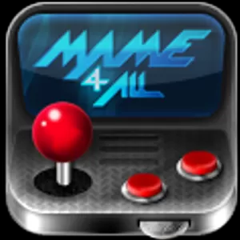
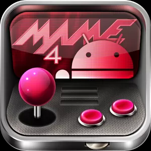

Le vostre macchinette Android (siano esse tablet o cellulari) permettono di emulare un'infinità di console vecchie e meno vecchie, giochi da sala e persino computer! Gli emulatori per Android sono moltissimi. Questa app cerca di organizzare in un unico servizio tutti gli emulatori presenti e vi porta ai link per scaricarli direttamente.
Gli emulatori per Android sono spesso il risultato del porting di emulatori pensati per Linux a cui sono stati aggiunti i controlli per utilizzare il touch screen. A causa della notevole disponibilità di hardware diverso da supportare è molto facile che un emulatore giri bene su un dispositivo e giri male o non giri affatto su un dispositivo apparentemente analogo.
In ogni caso cercheremo di indicare di volta in volta i requisiti minimi per apprezzare l'emulatore in questione. Per noi 'apprezzare' significa che l'emulatore in questione non deve funzionare con frame skip più alti di uno, altrimenti l'esperienza del gioco originale risulta gravemente compromessa.
Alcuni emulatori per Android sono a pagamento, altri installano pubblicità per finanziarsi e altri ancora sono gratuiti.
Per quanto sia sempre consigliabile testare prima un emulatore gratuito e per quanto ci siano fra gli emulatori gratuiti piacevoli eccezioni come RetroArch, in generale gli emulatori gratuiti sono aggiornati meno spesso e non sono troppo ottimizzati.
Nelle tabelle che seguono riportiamo il nome dell'emulatore, il sistema o i sistemi emulati, le specifiche minime richieste, il link per il download e qualche breve nota. Gli emulatori sono organizzati partendo da quelli gratuiti; trovate poi quelli gratuiti con pubblicità e infine quelli a pagamento.
Emulatori completamente gratuiti
| Nome | Sistema emulato | Specifiche minime | Download | Note |
|---|---|---|---|---|
|
PS1, SNES, NES, SMS, MD, GB, GBC, GBA, VB, Finalburn, MAME2003, NGP, PCE, Wonderswan, Quake, Doom, Cave story | Varie a seconda dell'emulatore. In generale un monocore 1 GHz è sufficiente, ma alcuni moduli come GBA, VB e SNES sono molto lenti e richiedono un dual core a 1 GHz. Non gira su ARMV6, ma solo su ARMV7 | Link su Google Play |
Un multiemulatore che si affida a una serie di moduli separati per i diversi sistemi. Alcuni moduli sono più ottimizzati, altri meno, pertanto le prestazioni variano parecchio. Non è supportato il frameskip, ma dispone della funzione di rewind che permette di tornare indietro nel gioco emulato, veramente unica. Tutto opensource e migliorabile |
|  Mame4Droid (0.37b5) |
MAME ROMSET 0.37b5 | Molto variabili, ma in generale più pesante di Retroarch. Le rom degli anni 70-80 girano su sistemi monocore, le rom degli anni 90 girano discretamente su sistemi dualcore, le rom molto recenti non sono supportate. Versioni sia per ARMV6 che ARMV7. | Link su Google Play |
Purtroppo il MAME per Android non è decisamente l'emulatore più ottimizzato che riuscirete a trovare. La maggior parte dei giochi che hanno meno di 20 anni sono giocabili solo su sistemi veloci e recenti. I giochi 3d restano praticamente ingiocabili a meno di non disporre di dispositivi veramente veloci. Il romset è abbastanza diffuso, ma meglio utilizzare clrmame.dat su PC per ottenere il romset desiderato. |
|  MAME4droid Reloaded (0.139) |
MAME ROMSET 0.139 | Versione aggiornata per supportare più rom recenti a scapito ulteriore delle performance. La maggior parte delle rom sono ingiocabili senza un dual core 1.5 GHz | Link su Google Play |
Vale quanto scritto sopra. Il vantaggio principale di questa versione è che supporta un numero molto più vasto di ROM tra cui per esempio tutti gli shoot'em up della Cave che però girano piuttosto lenti a meno di disporre di un hardware almeno dual core. |
App realizzata da paulvern (paulvern@gmail.com) - Visitaci su openconsole.it
Se trovi utile questa app fai una donazione